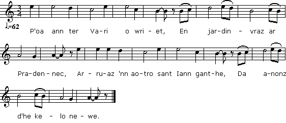
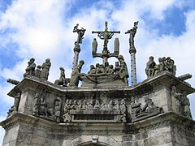

1° Itron Varia
Notre Dame
Our Lady
Chant noté par La Villemarqué
Dans le 1er carnet de Keransquer (non publié)
Mélodie 1
"An teir Vari - Les trois Marie"
Air recueilli auprès de Marguerite Philippe de Pluzunet
"Ar bugel koar - L'enfant de cire"
Air recueilli auprès de Maryvonne Bouillonnec de Tréguier.
Les 2 mélodies sont publiées dans "Musiques bretonnes", de Maurice Duhamel
Arrangement Christian Souchon (c) 2013
Source: le site de M.Quentel, "Son ha ton" (voir "Liens").
|
[1] La Grande et la Petite Passion "Plusieurs Passions traditionnelles se chantaient autrefois en pays de Vannes et en Cornouaille, dans les 15 jours qui allaient du dimanche de la Passion à Pâques. Le Vendredi Saint, à Baud, donnait lieu à une procession originale: les gens venaient par groupes des différents quartiers de la paroisse, chantant la Passion, pour se rassembler finalement à l'église du bourg. Le texte en était un vieux cantique vannetais que nous retrouvons dans les anciens recueils imprimés. La Cornouaille nous présente encore deux textes différents que les chanteurs appellent la Petite et la Grande Passion, bien que l'un et l'autre soient à peu de choses près de même longueur. Ce sont des bribes d'une ancienne pièce de théâtre..." L'auteur de ces lignes est Loeiz Ar Floc'h, alias le Père Louis Augustin Le Floc'h, alias Maodez Glanndour (1909-1986), auteur du "Brasier des Ancêtres" dont elles sont extraites (P. 65), La pièce qui suit, tirée du 1er carnet de Keransquer, semble être une des variantes de cette "Grande Passion Cornouaillaise". Les strophes 5, 6 et 8, par exemple, (p. 30 du carnet) se retrouvent à l'identique dans le texte de Le Floc'h. [2] Le Grand mystère de Jésus selon La Villemarqué Les deux Passions ont beaucoup à voir avec le "Grand Mystère de Jésus", édité en 1866 par le même Hersart de La Villemarqué. La Villemarqué a aussi ajouté à son ouvrage, des "fragments traditionnels" du même Mystère, les "Dialogues de la Passion" (Divizoù ar Basion), issus de la tradition orale, dont il admire "la pureté du langage ... et...la valeur poétique et morale". Ces dialogues sont au nombre de quatre: et ils occupent les pages 239 à 259 de l'ouvrage. Dans sa longue Introduction, l'auteur ne fournit aucune indication quant à l'origine de ces textes qui s'enchaînent avec une logique impeccable. Si bien qu'on peut imaginer que, comme pour le Barzhaz, il en a composé lui-même une grande partie, en brodant sur une tradition orale authentique. Peut-être a-t-il mis à contribution certains des 160 "Kanaouennoù Santel" (cantiques) publiés en 1842 par son ami l'Abbé Henry, dont il a préfacé le recueil. Quoi qu'il en soit, ces Dialogues contiennent des citations de l"Itron Varia" du cahier de Keransquer aux pages 250, 254 à 256 et 259. Les ressemblances entre les deux textes sont frappantes et on ne saurait douter que La Villemarqué a utilisé ce chant qu'il avait recueilli trente ans plus tôt. Un an seulement avant que ne commence la querelle du Barzhaz, La Villemarqué a l'imprudence (ou l'insolence?) de citer, page 77 de la Préface du Mystère, comme autres exemples d'art dramatique populaire breton, la "Danse du glaive" et la "Fête du Printemps" dont l'authenticité est loin d'être assurée! [3] Autres exemples de Passions bretonnes On trouvera en outre ci après 3 variantes des "Passions" bretonnes dont voici les origines: |
[1] The Great and the Small Passion of Christ "Several traditional Passions that were sung in the Vannes and Quimper bishoprics in the fortnight between Palm Sunday and Easter Sunday. In Baud, for instance, a Good Friday procession was held to which each part of the parish sent a group of its own that came singing the Passion hymn. The groups gathered in the town church. The lyrics in the Vannes language are still found in old printed collections. There are still two different hymns in Cornouaille dialect titled the Small and the Great Passion though the Small one is nearly as long as the Great one. Both are the remnants of an old theatre play..." The author of these lines, Loeiz Ar Floc'h, alias Father Louis Augustin Le Floc'h, alias Maodez Glandour (1909 - 1986), who wrote the "Ancestors' Bonfire" where they are drawn from (p. 65). The first piece below, drawn from the 1st Keransquer copybook seems to be one of the numerous variants to the "Great Cornouaille Passion". For instance, stanzas 5, 6 and 8 appear almost unchanged in Le Floc'h's record. [2] The Great Mystery of Jesus edited by La Villemarqué We may assume that both Passions have a lot to do with the "Great Mystery of Jesus" published in 1866 by La Villemarqué. La Villemarqué also appended to his book "traditional fragments" of the same Mystery, the Passion of the Christ Dialogues (Divizoù ar Basion), pertaining to oral tradition, whose "purity of language... and... poetic and ethical merits" he admired. There are four such dialogues in the appendix: that are found on pages 239 with 259 of the book. In his long Introduction the author does not lift the veil from the origin of these texts that are logically linked together in a perfect way. So that we may imagine that he filled in the gaps in authentical traditional stuff with his own compositions, as he perhaps sometimes did for the "Barzhaz". While doing so he possibly availed himself of some of the 160 "Kanaouennoù Santel" (hymns) published in 1842 by his friend, the Rev. Henry, for which he wrote a long preface. Anyway these Dialogues include excerpts from the Keransquer copybook song "Itron Varia" on pages 250, 254 with 256 and 259. The similarities between both texts are evident and there is little doubt, in fact, that La Villemarqué re-used the text he had gathered thirty years earlier. Only one year before the "Barzhaz quarrel" broke out, La Villemarqué was so imprudent (or insolent?) as to quote on page 77 of his Preface to the Mystery, as other instances of the Breton popular drama, "The Dance of the Sword" and the "Springtime Celebration" whose genuineness is far from unquestionable! [3] Other instances of Breton Passions In addition, you will find on this page three variants to the Breton "Passion of the Christ" whose origins are: |
|
BRETON (Version KLT) page 29 ITRON VARIA 1. Mar fell d'eoc'h ober un devezh mat, Savit d'eus ho kwele mintin mat Da vont da zaludiñ Itron Varia Ha neuze he mamm, Santez Ana! 2.1 'N Itron Varia ' vont gant an hent bras. Ur plac'h yaouank a rekontras: 2.2 - Dallit-c'hwi va merc'h ur mouchouer Ha lakit hen kornig an armel. 3. Ha na deuit ket gantañ d'an dour ster Kar ema e-barzh gwad Hor Salver. Ha na deuit gantañ d'an dour prad, [1] Rag ema e-barzh gwad an Tad. [2] page 30 4. Ha na deuit ket gantañ d'an dour red Peotramant 'ma echu fin ar bed. [3] 5. 'N Itron Varia ' vont gant an hent bras. Tri den yaouank a rekontras: 6. - Tri den yaouank, din lavarit, Pelec'h 'maoc'h bet ha men a ait, Pa n'ho-peus-c'hwi ket me saludet. 7. Ar salud zo kaer hag ekselañt Kenkoulz d'ar c'hozh ha d'ar yaouank. - Mari, Mari, me ekskuzit! Ni zo un tammig fatiget. 8. Ni a zo bet 'barzh ur menez, Da wel'd sevel ar groaz nevez Evit krusifiañ ar Doue, 9. Evit krusifiañ ar profet, Pehini zo d'an noz-mañ kemeret. 10. - Tri den yaouank, ne gredan ket, Glac'har em c'halon na lakit! Mont a ran me-unan da weled. page 31 11. - Sant Yann, Sant Yann, kenderv Doue, [9] Pehini deus an tri-ze eo va mab-me? 12. - 'N hini zo du-ze, d'ar benn-'raok, 'N hini zav E groaz an uhellañ, En-deus un Uzev 'bep-tu d'ezhañ. 13. - Sant Yann, Sant Yann, kenderv Doue, Kasit ar gwreg-mañ alese! Pa n'am-eus anave'et gwreg espres Ha c'hwi roit ...mamm-gwerc'hez. [4] 14. - Sant Yann, Sant Yann, kenderv Doue, Kasit va mamm-mañ alese! Ha it-c'hwi ganti. C'hwi 'vale bro, Birviken netra deoc'h na vanko. [5] 15. Da den na vezit anavezet Med d'an trede deus va moerebed. - [6] [7] 16. 'N hini a oufe ar werz-mañ Hag he larfe div-teir gwech bemde, Daou c'hant devezh pardon 'n-defe. 17. Hag an hini ha me selaoufe, 'N hini he oar ha ne lar ket, En-deus gant Doue pinijenn kalet. page 32 18. 'N hini n'ouie ket hag e silaou Hag en-deus lod eus e meritoù. Transcrit par Christian Souchon |
FRANCAIS page 29 NOTRE DAME 1. Si vous voulez avoir une bonne journée, Levez-vous de votre lit de bon matin, Pour aller saluer Notre Dame, Puis sa mère Sainte Anne! 2.1 Notre Dame allait par la grand' route. Elle rencontra une jeune fille: 2.2 - Prenez, ma fille, un mouchoir Et mettez-le au coin de l'armoire. 3. Et ne l'emportez pas dans l'eau de la rivière Car il y a dedans le sang de Notre Seigneur. Et ne l'emportez pas dans l'eau du pré, [1] Car il y a dedans le sang du Père. [2] page 30 4. Et ne l'emportez pas dans l'eau courante Sinon, c'est la fin du monde. 5. Notre Dame allait par la grand' route. Rencontra trois jeunes gens: [3] 6. - Braves jeunes gens, dites-moi, D'où venez-vous et où allez-vous, Vous qui ne m'avez pas saluée. 7. Saluer est chose bonne et excellente Tant pour les vieux que pour les jeunes. - Marie, Marie, me excusez-moi! Nous sommes un peu fatigués. 8. Nous sommes allés dans la montagne, Voir ériger une nouvelle croix Pour crucifier le dieu, 9. Pour crucifier le prophète, Qu'on a arrêté cette nuit. 10. - Jeunes gens, cela je ne le crois pas, Vous me mettez du chagrin au cœur! Je vais voir par moi-même. page 31 11. - Saint Jean, Saint Jean, cousin de Dieu, [9] Qui de ces trois-là est mon fils? 12. - Celui-là, là-bas, en avant, Dont la croix s'élève le plus haut, Il a un juif de chaque côté de lui. 13. - Saint Jean, Saint Jean, cousin de Dieu, Eloignez cette femme! C'est à dessein que je n'ai point pris femme Et vous conduisez ici la Vierge, ma mère. [4] 14. - Saint Jean, Saint Jean, cousin de Dieu, Eloignez ma mère! Allez avec elle parcourir du pays, Jamais rien ne vous manquera. [5] 15. Ne vous faites connaître à personne Sinon à la troisième de mes tantes. - [6] [7] 16. Celui qui connaîtrait cette complainte Et qui la dirait deux ou trois fois par jour, Aurait deux cents jours d'indulgence. 17. Tout comme celui qui m'écouterait. Celui qui la sait et ne la récite pas Se voit infliger par Dieu une dure pénitence. [8] page 32 18. Celui qui ne la sait pas mais l'écoute Bénéficie d'une partie de ses mérites. Traduction Donatien Laurent |
ENGLISH page 29 OUR LADY 1. If you want to spend a good day, Get up from bed early in the morning And greet the Holy Virgin Mary Then her holy mother, Saint Ann! 2.1 Holy Mary walked on the highway. She passed a young girl: 2.2 - Here, my girl, is a handkerchief for you To keep in a corner of your press. 3. Mind you don't wash it at the washhouse As it is soaked with Our Saviour's blood. Mind you don't wash it in the pond, [1] As it is soaked with the Father's blood. [2] page 30 4. Mind you don't wash it in the river Or it will start the end of the world. [3] 5. Holy Mary walked on the highway. She passed three young men: 6. - I am speaking to the three of you, Tell me whence you come and wither, Since you passed without greeting me. 7. Greeting is a good, an excellent custom Both for old and young people. - Mary, Mary, excuse me! We are a bit tired. 8. We were on a mountain, To see them put up a cross To crucify God, 9. To crucify the prophet, Whom they caught during the night. 10. - I don't believe the three of you Who are breaking my heart! I'll go and see with my own eyes. page 31 11. - Saint John, Saint John, Cousin of God, [9] Which of those three is my son? 12. - The one up there, in front of the others, Whose cross towers above the rest: With a Jew to either side. 13. - Saint John, Saint John, Cousin of God, Take this woman away! I did not marry on purpose And you are bringing ...Virgin and mother. [4] 14. - Saint John, Saint John, Cousin of God, Take my mother away from here Go with her and travel the land, You shall lack nothing on your way. [5] 15. Don't tell anybody who you are Except the third of my aunts. - [6] [7] 16. Whoever knows this lament And says it two or three times a day, Two hundred days' indulgence shall reward him. 17. And whoever listens to it, And knows it, but doesn't say it, Owes to God harsh penitence. [8] page 32 18. Whoever didn't know it and listen to it Will benefit from part of its merits. |
NOTES
|
[1] Ces "articles de foi" autour du mouchoir qu'on ne doit laver ni à la rivière, ni au lavoir, ni à l'étang d'un pré, sont propres à la Bretagne. Loeiz Ar Floc'h suggère qu'il s'agit du voile de Véronique, dont la légende se répandit entre le 7ème et 8ème siècle. Il se fonde certainement sur l'interprétation que fait La Villemarqué dans ses "Dialogues de la Passion" (la scène qu'il intitule "Hent ar C'halvar", le chemin du Calvaire, page 250) des strophes 2.2 à 4 du chant qu'il a collecté. Le discours de la Vierge à la jeune fille, y est mis dans la bouche de Sainte Véronique qui s'adresse à sa sœur. Le mot "mouchouer" y est remplacé par "couricher", traduit par "coiffe". Si La Villemarqué a voulu éviter un mot français, il n'y est pas parvenu: "mouchouer" est le français "mouchoir", tout comme "couricher" est le français "couvre-chef" (de deuil), aussi bien travesti que son pendant anglais "kerchief"! On trouvera ci-après son texte et sa traduction, où la réponse de la sœur de Véronique, avec son luxe de détails, est certainement sortie tout droit de l'imagination du Barde de Nizon La tradition bretonne relative à Véronique se distingue de la version "officielle" de la légende. La sixième station du Chemin de croix présente Véronique comme une femme qui brave la foule hostile et utilise son voile pour essuyer le visage du Christ alors qu'il monte au Calvaire. Elle recueille ainsi une image que l'on appelle la "Sainte Face". Plusieurs églises se disputent l'honneur de posséder le vrai voile: Rome, Milan, Jaén en Espagne.
Comme la scène se passe le Vendredi saint, elle a peut-être donné lieu à un autre interdit: celui de la lessive le vendredi, évoqué dans La légende de Saint Ronan, strophe 25 et dans Yannick Scolan, strophe 44, mais peut-être est-ce, dans ce dernier cas, un ajout inspiré à La Villemarqué par ce chant, car les autres versions collectées n'en parlent pas. [2] On chercherait en vain ce "sang du Père" dans les catéchismes officiels. C'est l'assonance avec "prad" (pré) qui a conduit le poète rustique à ce "néologisme religieux", dont le "cousin de Dieu" à la strophe 11 fournit un autre exemple. [3] Dans la version de Luzel (cf. infra), les trois jeunes gens font place à un seul jeune homme. L'apologie du salut se retrouve chez De Penguern. [4] Ce passage transcrit "a vit rout mon gueches" par Donatien Laurent n'est pas du tout clair. Il est certainement motivé par le terme brutal de "femme" appliqué par le Christ à Sa mère (Jean 19, 26). [5] "Puis il dit au disciple: Voilà ta mère. Et dès ce moment le disciple la prit chez lui." (Jean 19, 27). [6] Cette "troisième tante" pourrait être Salomé, épouse de Zébédée, soeur de Marie et mère de Jacques le Majeur et de Jean l'apôtre. Contrairement à Marie, femme de Cléophas (ou Alphée, lequel est peut-être le frère de Joseph), et mère de Jacques le Mineur, elle n'est pas citée, dans l'évangile de Jean comme se tenant auprès de la croix. [7] Le dialogue entre les trois jeunes gens et la Vierge est remplacé chez La Villemarqué (pages 254 à 256 du "Mystère") par un dialogue entre cette dernière et Saint Jean, intitulé "Al Lamgroaz" (la Croix de bois) comme chez De Penguern. Il correspond aux strophes 5 à 15 du présent chant. La Villemarqué s'y montre plus fidèle à son modèle, si ce n'est qu'il ajoute l'étonnant couplet:
Contrairement aux couplets sur le "coffre d'ivoire" de la sœur de Véronique (dans le plus pur style gothique troubadour), cette strophe semble d'inspiration paysanne authentique. En revanche, passer sous silence l'énergique "kasit ar gwreg-se alese" (emmenez cette femme loin d'ici) du chant original, revient à trahir ce beau texte. [8] La promesse d'indulgences liées à l'exécution de ce chant se retrouve dans les versions collectées par De Penguern et F. Vallée. Le clergé officiel l'approuvait-elle? Page 259 de ses "Dialogues", La Villemarqué termine son "Epilogue" (Ar c'himiad) en évoquant les "Confréries" (en breton, "breuriezhoù", sociétés de dévotion).
Le remplacement, strophe 16, du mot "larfe" (dirait) par "c'hoari" (jouer) qui fait entrer la pièce dans le domaine du théâtre que l'ouvrage de La Villemarqué se propose d'explorer, est de son fait, à n'en point douter. En est-il de même de l'évocation des "Confréries" sur laquelle le livre s'achève? [9] "Cousin de Dieu": l'apôtre Jean (et son frère aîné Jacques le Majeur) étaient fils de Zébédée et de Salomé, la sœur de Marie, la mère de Jésus (Matthieu 27.56 et Marc 15.40). Marie et Salomé sont avec Marie-Madeleine les trois femmes qui se tiennent au pied de la croix. La tradition des "Trois Marie" provient de l'évangile de Jean (19.25) qui remplace Salomé par la mère de Jacques le Mineur et José, qu'il nomme Marie femme de Clopas (ou "Cléophas" ou "Alphée", trois forme de l'hébreux "Chal'phai"). Dans Marc (6.3) apparaît un Jacques, frère de José, mais aussi de Jude et de Simon et tous sont dits frères de Jésus, le fils de Marie et l'on parle aussi de sœurs! On peut résoudre ce paradoxe en donnant à "frère" le sens de "cousin" et en faisant de Cléophas le frère de Joseph (le père putatif de Jésus). Jacques le Mineur, José, Jude et Simon seraient alors eux aussi des "cousins de Dieu". |
[1] These "articles of faith" concerning the handkerchief that should be washed neither at the wash-house, nor in a pond or a river are peculiar to Brittany. Loeiz Ar Floc'h suggests they hint at Veronica's veil, a legend arisen between the 7th and the 8th century. His opinion should be based on La Villemarqué's interpretation of stanzas 2.2 with 4 of the song he had collected, as they appear in his "Dialogues of the Passion", especially in the scene titled "Hent ar C'halvar" (The Calvary Way, page 250). The Holy Virgin's address to the girl, is put into the mouth of Veronica who speaks to her sister. The word "mouchouer" is replaced by "couricher", translated as "headdress". If La Villemarqué wanted to shun using a French word, his attempt failed: in the same way as"mouchouer" is for French "mouchoir", "couricher" is for French "couvre-chef" (mourning headdress), as well disguised as is its English equivalent "kerchief"! Hereafter is his text with translation, including Veronica's answer which must have arisen from the Bard of Nizon's fancy. Breton lore concerning Veronica differs from the "official" legend. The sixth station of the Way of the Cross shows Veronica as a woman who braved the hostile mob and used her veil to wipe the blood off the face of Christ who was ascending the Calvary way. His image was imprinted on the cloth, known as the "Holy Face". Several churches vie for the honour of harbouring the true veil: Rome, Milan, Jaén in Spain.
Since the day of the scene is Good Friday, it may be the origin of another interdict: never washing clothes on Fridays, as mentioned in the Legend of Saint Ronan, stanza 25 and in Yannick Scolan, stanza 44. In the latter case, it may be an interpolation by La Villemarqué from the present poem, as the other collected versions don't mention it. [2] One would look in vain for this "blood of the Father" in official catechisms. It is the assonance of "gwad" (blood) with "prad" (meadow) that prompted the country bard to this "religious neologism", another instance of which will be found in stanzas 11, 13 and 14: "Cousin of God". [3] In Luzel's version (see below), the three young men are replaced by one young man. The praise of greeting id also found in the below De Penguern version. [4] This translates a mysterious "a vit rout mon gueches", as Donatien Laurent transcribes this passage. We may assume that it refers to the harsh word "woman" applied by Jesus to His own mother (John 19,26). [5] " And he said to this disciple, “Here is your mother.” And from then on this disciple took her into his home (John's Gospel, 19, 26). [6] This "third aunt of Jesus" could be Salome, wife of Zébedee, sister of Mary and mother of James the Greater and of the Apostle John. Unlike Mary, wife of Cleophas (or Alphaeus, who could be Joseph's brother), and mother of James the Less, she is not quoted, in the gospel of John, as one of the women standing near the Cross. [7] The dialogue between the three young men and the Holy Virgin is replaced in La Villemarqué's "Mystery" (pp. 254 to 256) by a dialogue between Mary and Saint John, titled "Al Langroaz" (The Wooden Cross), like in the De Penguern MS. It corresponds to stanzas 5 to 15 of the song at hand. La Villemarqué is here more cautious not to betray his model. Nevertheless an strange additional stanza is inserted:
Unlike the stanza about the "ivory chest" kept by Veronica's sister, an unmistakable sample of "Troubadour style", this passage sounds like genuine country folk poetry. However, La Villemarqué's leaving out the powerful "kasit ar gwreg-se alese" (take this woman away from here!) in the original song is tantamount to treason. [8] The indulgences attached to singing this song are also mentioned in the versions collected by De Penguern and François Vallée. We may wonder if they were confirmed by the official Church authorities, even if La Villemarqué concludes his Kimiad (Epilogue) by referring to devotion societies called in Breton "breuriezhoù" (brotherhoods).
By replacing, in stanza 16, the word "larfe" (would say) by "c'hoariñ" (to play), La Villemarqué forwards the piece into the fields of the drama which he wants to investigate in his book. He undoubtedly made this change on purpose. Did he also invent those "brotherhoods" with which the book concludes? [9] "Cousin of God": John the Apostle (and his elder brother James the Greater) were the sons of Zebedee and Salome who was the sister of Mary, the mother of Jesus. (Matthew 27.56 and Mark 15.40).< Mary and Salome are, with Mary-Magdalene the three women who stood at the foot of the Cross. The tradition of the "Three Maries" is derived from the gospel of John (19.25) who replace Salome by the mother of James the Less and Joses, whom it names Mary, wife of Clopas (or "Cleophas" or "Alpheas", three forms of the Hebraic "Chal'phai"). Mark (6.3) mentions James, brother of Joses, but also of Jude and Simon and all of them are said "brothers of Jesus, the son of Mary" ("sisters" of Jesus are also mentioned)! The problem can be solved by understanding "brother" as meaning "cousin" and by making of Cleophas the brother of Joseph (putative father of Jesus). James the Less, Joses, Jude, Simon are, consequently, also "cousins of God". |
2° Gwener ar Groas
Le Vendredi Saint
Good Friday
Tiré de la Collection de Penguern, Tome 90
Chanté par Anaïck Cozic, en septembre 1850|
BRETON (Version KLT) GWENER AR GROAZ 1. D'ar Gwener ar Groaz da c'hreisteiz, Gweled Jezuz oa truezuz. Kement kroaz-hent a dremene An taolioù fouet ken a goulie. 'Dalek ar penn beteg an troad, Na oa nemed gouli ha gwad. 2. Pa ae an teir Vari gant an hent, Tri mab yaouank a rankontrent: - Ni ho salud, tri mab yaouank, Ar salud zo kaer hag ekselant Kerkoulz d'ar c'hozh 'vel d'ar yaouank. 3. - Ni zo o tistreiñ deuz ar menez Goude ober lamgroaz nevez [1] Lakaat ur profet da c'hourvez Gant gouloù tan, leternioù kloz Hag i mouchet gant an divvoz. 4. - Mard'out-te gwir mab da Zoue Divin, piv n'deus da skoet! - An neb en-deus va skoet Deus va baradoz ec'h eo privet. 5. Tri mil ene a voa c'hoazh Hag en ifern losket poazh Ken a voa hon Salver benniget. O lammas holl deus-a bec'hed O lammas holl bihan ha bras Lavaromp holl "Deo gratias!" 6. Pater noster priñsipal Gwir ha "sinceris" d'an ordinal. [2] Un deiz a zeuy, heb lakaat mar, Biskoazh na vezo gwelet e bar, E frailho ar vein, e sec'ho ar gwez, E serro an noz en kreiz an deiz. [3] 7. D'ar yaou gamblid pa serras noz [4] 'N en-devoa ken Jezuz da repoz. D'e vinigoù muiañ karet, Da Ber en-deus bet lavaret: "Per a-benn ma pezo va dianzavet Da lared biskoazh n'az-poa va gwelet An dra-ze a rey ur glac'har em c'halon Ma dianzavo enep feson." 8. Ar Basion neb a goufe, Gant ur "bater" e lavarfe, Un ene da Zoue a zilifre Ha biken en puñs an ifern na kouezhfe, Na d'an deroù eñ ne dafe Ha da petore eur fin vefe. [5] Transcrit par Christian Souchon |
FRANCAIS LE VENDREDI DE LA CRUCIFIXION 1. Le Vendredi saint à midi, Jésus à voir faisait pitié: Aux carrefours qu'il traversait Les coups de fouet le blessaient tant, Depuis la tête jusqu'aux pieds, Qu'il n'était que plaies et que sang. 2. Les trois Marie passaient par là. Elles croisent trois jeunes gars: - Nous vous saluons tous les trois, Car c'est un excellent usage De saluer les gens, à tout âge. 3. - Nous revenons du mont Calvaire: Une croix neuve avions à faire: [1} Et un prophète à terrasser, Portant torches et lumignons Que de nos paumes aveuglions. 4. - Oh Fils de Dieu, si tu dis vrai, Devine donc qui t'a frappé! - Que celui qui me frappe ainsi Soit privé de mon paradis! - 5. Il y avait encor trois mille âmes, Des damnés, et la proie des flammes, Jusqu'à ce qu'un Sauveur béni, Du péché les ait affranchis. Tous, qu'ils fussent petits ou grands. Rendons "Grâces à Dieu", vraiment. 6. Prions "Notre Père" avant tout, Oui, peuple sincère, à genoux! [2] Un jour viendra, n'en doutez-point, Qu'on ne peut comparer à rien: Glacial et torride à la fois, A midi la nuit tombera. [3] 7. Le Jeudi Saint au crépuscule, [4] Jésus ne trouvait le repos. Au préféré de ses disciples, A Pierre il avait dit ces mots: "Après que tu m'auras renié, Affirmant ne point me connaître, Et j'en aurai bien du regret, Tu seras le pire des traîtres." 8. Si l'on chante cette "Passion", Et un "Notre Père" final, Une âme aura rémission, Echappant au puits infernal; Qu'importe où l'on commencera Et à quelle heure on finira. [5] Traduction Christian Souchon (c) 2014 |
ENGLISH GOOD FRIDAY 1. Upon Good Friday about noon Jesus' pains are a dreadful sight: At every crossroad near to swoon While the torturers strike and smite From crown to feet a bleeding wound, The boos of the crowd all around. 2. The three Maries are on their way. Three young men they encounter - Young men, we wish you a good day! Greeting is excellent manner For old and young altogether. 3. - Upon the hill which we descend We helped to erect a new cross. A prophet we did apprehend With dark lanterns, no shine or gloss, Tiptoeing by night on the moss. 4. - If you are God's son, so they said, Him who has struck you recognize! - The one who struck me on the head Has forfeited my paradise. - 5. Three thousand souls that were shame- Ful preys to the flames of hell, Until our blessed Saviour came And freed them all of Satan's spell And he freed them all, big and small That were to the devil in thrall. 6. Let us pray a "Pater noster" Which is our true daily prayer. A day will dawn, do not doubt it, Of which no one knows but God's wit: Icy cold and hot at a time. Nightfall in the brightest sunshine. 7. Upon Maundy Thursday at night As Jesus could not sleep and rest, He said to his friend, his dearest Peter, with unerring insight: - O Peter, you are to deny That you have known me, in the end. My heart will suffer from the lie Of my treacherous, dearest friend! - 8. This Passion song whoever knows And recites with a pater, will Redeem for God the soul he chose, Doomed otherwise hell to fill, Regardless of the inception And of the time of completion. Translation: Christian Souchon (c) 2014 |
NOTES
|
[1] "Goude ober lamgroaz nevez, lakaat ur profet da c'hourvez": après avoir fait une croix nouvelle et mis à bas un prophète. Ces trois jeunes garçons étaient parmi les acteurs du drame. Ils n'en étaient pas seulement les spectateurs, comme dans la pièce précédente. [2] "Lavaromp holl...d'an ordinal". Je ne sais trop comment traduire ce spécimen de "breton de curé" qui mèle le celtique au français et au latin. L'idée est sans doute qu'il faut dire sans relâche, mais de façon toujours aussi sincère les prières en question, pour préparer le monde au cataclysme final. [3] La même prédiction se trouve dans le Dialog etre Arzur, Roue d'ar Vretoned ha Gwinglañ, vers 36 à 40. La "confusion des saisons" et le "mélange du jour et de la nuit" qui annonce la fin du monde est mentionnée également dans la "Petite Passion" recueillie par Loeiz Ar Floc'h. C'est d'ailleurs le "Jugement dernier" qui occupe l'essentiel de ce poème. Il est décrit de façon (presque) conventionnelle: l'ange fait résonner sa trompette et Saint Michel agite sa balance dans laquelle la Vierge Marie dépose les grains de son rosaire, cinquante perles dont chacune pèse cinquante livres! Loeiz Ar Floc'h ajoute aux deux "Passions" un curieux "Te Deum ar Werc'hez" (Te Deum de la Vierge) où l'on voit celle-ci intercéder auprès de son Fils pour les pécheurs repentants. "O geo, ma Mamm me o fardono, Nemet e vo ret mat dezho Ober pinijenn garo" (Soit, Mère je leur pardonnerai, mais il leur faudra absolument subir une dure pénitence). Par cette phrase, Jésus institue le purgatoire! [4] Le manuscrit porte "Dar iaou ambluk". Il ne peut s'agir que du Jeudi saint, que le Père Grégoire appelle "Jeudi absolu" et traduit par "Yaou gamblid" (écrit de diverses façons). Il l'interprète comme provenant de "kambr al lid", "la chambre de la solennité du Saint-Sacrement". Cette explication est plausible: "lid" signifiant "rite", "cérémonie solennelle". Dans les trois évangiles synoptiques l'instauration de l'Eucharistie a lieu le jeudi précédant Pâques, dans une grande chambre haute et meublée que Jésus désigne aux disciples. L'évangile de Jean n'en parle pas. [5] Le tarif des indulgences liées à l'exécution du chant est-il moins généreux que dans la pièce précédente? 300 jours de purgatoire en moins, contre le rachat définitif d'une âme! |
[1] "Goude ober lamgroaz nevez, lakaat ur profet da c'hourvez": after we had made a new cross and laid down a prophet. The three young lads were among the performers of the drama. Not just spectators as in the previous piece. [2] "Lavaromp holl...d'an ordinal". I fail to find a convenient transcription for this specimen of "clerical Breton", a mix of Celtic, French and Latin. They idea to be conveyed should be that the prayers in question must be repeated with assiduity and sincerity to obtain lenience in view of the impending final catastrophe. [3] The same prediction is made in Dialog etre Arzur, Roue d'ar Vretoned ha Gwinglañ, line 36 to 40. This "confusion of the seasons" and "mingling of day and night" are also addressed in the "Little Passion" collected by Loeiz Ar Floc'h. It is "the Last Judgment" to which this latter poem is mainly dedicated. Doomsday is described in an (almost) conventional way: the angel blows his trumpet while Saint Michael wields his scales wherein the Holy Virgin lays one by one the beads of her rosary: fifty pearls weighing fifty pounds each! Loeiz ar Floc'h appended to both "Passions" a curious "Te Deum ar Werc'hez" (The Virgin's Te Deum), featuring Saint Mary interceding with her Son for the penitent sinners: "O geo, ma Mamm me o fardono, Nemet e vo ret mat dezho Ober pinijenn garo" (Let it be, Mother, I shall pardon them, but they must needs harshly atone for their sins). By these words, Jesus establishes the Purgatory! [4] The MS has "Dar iaou ambluk". It must refer to Maundy Thursday that Father Gregory of Rostrenen calls "The Absolute Thursday" and translates as "Yaou gamblid" (in several spellings). He explains it as derived from "kambr al lid", "the chamber of the Holy Sacrament". This interpretation is plausible, as "lid" means "rite, solemn ceremony". In the three synoptic gospels, the institution of the Eucharist took place, on the Thursday before Easter, in a large upper room where Jesus had directed his disciples to prepare the Passover meal. Saint John's gospel ignores this event. [5] Is the "indulgence pricelist" for performing this Mystery song less attractive than for the previous piece? 300 days' exemption from Purgatory, instead of the perpetual redemption of a soul! |
3° An Teir Vari
Les trois Marie
The three Maries
Chant tiré des "Gwerzioù Breiz Izel", tome I
de François-Marie Luzel, publiés en 1868recueilli auprès de Marie Audern, du bourg de Pluzunet, en 1867
Egalement publié dans les "Sonioù Breiz I-zel" (Noueloù ha sonioù relijiel, p. 318, 1890)
|
BRETON (Version Luzel) AN TEIR VARI [1] 1. P' oa ann ter Vari o wriet, En jardin-vraz ar Pradennec, Arruaz 'nn aotro sant Iann gant-he, Da anonz d'he kezlo-newe. 2. - Ha demad d'ac'h-dhui, ma moereb, N' 'c'h euz ket gwelet Zalwer ar bed ? - - Aotro sant Iann, c'hui oa gant-han, Hag a dle goud pe-lec'h eman. - 3. - Aboe dirio da greiz-de N''am euz klewet d'ez-han doare. - Ar Werc'hes Vari, pa glewaz, Ter-gwes d'ann douar a goezaz : - 4. - Tawet, moereb, na oelet ket, Me ielo d'hen klask, mar be red ; Me dalc'ho da vale, noz-de, Ken am bo kavet map Doue. - II 5. P' oa 'nn ter Vari 'vont gant ann hent, Hi o rankontr ur mâl iaouank : - Demad d'ac'h, 'me ar mâl iaouank, 'R zalut 'zo bepred ekselant ; 6. 'R zalud 'zo bepred ekselant, Kerkoulz da goz 'vel da iaouank. Pelec'h ez et, pelec'h oc'h bet, Pe ho euz esper da vonet? 7. Me 'zo 'retorn euz ar menez, Bet 'welt sevel 'r c'halvar newez ; O welt sevel ur c'halvar koad, Wit krusifia Doue 'r map. - 8. Ar Werc'hes Vari, pa glewaz, Ter-gwes d'ann douar a goezaz ; Ter-gwes d'ann douar eo koezet, 'R mâl iaouank 'n euz hi goureet. 9. - Pe c'hui a c'hoerz, pe c'hui 'ra goab, Pe 'ra da Vari kalonad ? - - Me na c'hoerzann, me na ran goab, N' ran ket da Vari kalonad. - III 10. - Lavaret d'in-me, c'hui Pilat, Pini ann tri-z-hont eo ma mab ? - - 'Nn hini 'zo 'rok gant 'r groaz vrasa, Bigno d'ar menez da genta, A zo komerret 'neizour-noz, Gant golo-sklezr, leterniou-kloz. . . . . . . . . . . . . . . . . . 11. - Kasset ar vroeg-se al lec'h-se, Kreski ma foaniou 'ra d'in-me. - - Perag' lares groeg euz da vamm ? Krenv eo ma c'halon pa na rann ! 12. Krenv eo ma c'halon pa na rann, Klewet m' mab' laret groeg d'he vamm ! Diskennet ma mab, euz ar groaz, 'Wit m'hen maillurinn ur wes c'hoaz. 13. - Deut ama d'in ur mouchouer, Ma torchinn ma goad, a diver. Dalet, ma mamm, ar mouchouer Eman en-han goad ar Zalwer ; 14. Ha na et ket d'ar stang gant-han, Rag goad hon Zalwer 'zo en-han ; Eman en-han ar vadeziant, Ann nouenn hag ar zakramant ; Rag eman en-han ann nouenn, Prest da reï d'ann nep hi goulenn ! IV 15. P' oa 'nn ter Vari 'vont gant ann hent, Hi o rankontr ur plac'h-iaouank. - Dalet, plac'h-iaouank, 'r mouchouer, Eman en-han goad hon Zalwer ; 16. Eman en-han ar vadeziant, Ann nouenn hag ar zakramant ; Eman en-han sur ann nouenn, Prest da reï d'ann nep hi goulenn ; Ha na it ket d'ar stang gant-han, Rag goad hon Zalwer 'zo en-han. - V 17. Ar plac'h-iaouank n' deuz ket sentet. (Kalz a re-all na reont ket), D'ar stang gant-han hi a zo et, Ar stang gant-hi 'zo dizec'het ; 18. Ar stang gant-hi 'zo disec'het, Hon Zalwer 'zo apariset ; Hon Zalwer a aparisaz, 'R mouchouer digant-hi 'lemaz : 19. - Dama, plac'h iaouank, 'r mouchouer Eman en-han goad ho Salwer : Pa oa 'r mouchouer d'ac'h roèt Dor 'nn ifern 'dan-oc'h 'poa serret ; 20. Dor 'nn ifern 'dan-oc'h 'poa serret, Dor 'r baradoz uz d'ac'h digorret : P'eo 'r mouchouer digant-oc'h lemet, Dor 'nn ifern 'dann ho treid 'zo digorret ; 21. Dor 'nn ifern 'dann ho treid 'zo digorret, 'R baradoz uz d'ho penn serret ! Adieu, plac'h iaouank, kenavo, Joa ar baradoz, pe war-dro ! - |
FRANCAIS LES TROIS MARIE [1] 1. Pendant que les trois Marie étaient à coudre Dans le grand jardin de Pradennec, Monsieur saint Jean vint les trouver, Pour leur annoncer une nouvelle. 2. - Bonjour à vous, ma tante, N'avez-vous pas vu le Sauveur du monde ? - - Monsieur saint Jean , vous étiez avec lui, Et vous devez savoir où il est. - 3. - Depuis jeudi, à midi, Je n'ai pas eu de ses nouvelles. - Quand la Sainte-vierge entendit cela, Elle tomba trois fois à terre : 4. - Consolez-vous, ma tante, ne pleurez pas, J'irai le chercher, s'il le faut ; Je marcherai nuit et jour, Jusqu à ce que j'aie retrouvé mon Dieu. - II 5. Comme les trois Marie étaient en route, Elles rencontrèrent un jeune homme : - Bonjour à vous, dit le jeune homme, Le salut est toujours une bonne chose ; 6. Le salut est toujours une bonne chose, Pour les vieux comme pour les jeunes. Où allez-tous, ou avez-vous été, Où comptez-vous aller ? 7. Moi, je reviens de la montagne, Où j'ai été voir dresser un nouveau calvaire ; J'ai été voir dresser un calvaire nouveau, Pour crucifier Dieu le fils. - 8. La Sainte-vierge, en entendant cela, Est tombée trois fois à terre ; Elle est tombée trois fois à terre, Et le jeune homme l'a relevée. 9. - Voulez-vous plaisanter, ou vous moquer, Ou navrer le cœur de Marie? - Je ne plaisante, ni me moque, Ni ne veux navrer le cœur de Marie. III 10. - Dites-moi, vous Pilate, Lequel de ces trois est mon fils ? - - Celui qui est devant, avec la plus grande croix, Et qui montera le premier sur la montagne ; Il a été arrêté la nuit dernière, Avec de la lumière dans des lanternes closes. - . . . . . . . . . . . . . . . 11. - Eloignez de là cette femme, Car elle augmente mes peines. - - Pourquoi appelles-tu ta mère femme ? Fort est mon cœur, puisqu'il ne se brise ! 12. Fort est mon cœur, puisqu'il ne se brise, En entendant mon fils appeler sa mère femme ! Descendez mon fils de la croix, Pour que je l'emmaillote une fois encore. - 13. - Donnez-moi un mouchoir, Pour essuyer mon sang qui ruisselle. Tenez, ma mère, prenez ce mouchoir, Qui contient le sang du Sauveur ; 14. Et n'allez pas le laver à l'étang, Car il contient le sang du Sauveur ; Il contient le baptême, Et le sacrement de l'extrême-onction ; Il contient le sacrement de l'extrême-onction, Tout prêt pour qui le demandera ! - IV 15. Quand les trois Marie étaient en chemin, Elles rencontrèrent une jeune fille. - Tenez, jeune fille, prenez ce mouchoir, Qui contient le sang de notre Sauveur ; 16. Qui contient le baptême Et le sacrement de l'extrême-onction ; Il contient le sacrement de l'extrême-onction, Tout prêt pour qui le demandera. Mais n'allez pas avec lui à l'étang, Car il contient le sang de notre Sauveur ! V 17. La jeune fille n'a pas obéi (Beaucoup d'autres ne le font pas), Elle est allée à l'étang avec le mouchoir, Et l'étang s'est desséché ! 18. L'étang s'est desséché, Et notre Sauveur lui est apparu ; Notre Sauveur lui est apparu Et lui a repris le mouchoir : 19. - Donnez, jeune fille, ce mouchoir Qui contient le sang de votre Sauveur. Quand ce mouchoir vous fut donné, Vous aviez fermé la porte de l'enfer sous vous ; 20. Vous aviez fermé la porte de l'enfer sous vous, Et ouvert la porte du paradis sur votre tête : Maintenant que le mouchoir vous est enlevé, La porte de l'enfer s'ouvre sous vos pieds ; 21. La porte de l'enfer s'ouvre sous vos pieds, Et celle du paradis se referme sur votre tête ! Adieu, jeune fille, au revoir, Dans la joie du paradis, ou aux environs ! Traduction de F-M. Luzel |
ENGLISH THE THREE MARIES [1] 1. As the three Maries were sewing, In the big garden of Pradennec, There came the lord saint John, To announce them a piece of news. 2. - Good day to you, my aunt, Did you see the Saviour of the world? - - Lord Saint John, you were with him, And you ought to know where he is. - 3. - Since Thursday noon I've been left without news of him . - The Holy Virgin when she heard it, Thrice she fell onto the ground : - 4. - Be quiet, my aunt, do not weep, I'll go and search for him, if I have to; I'll walk and walk by day and night, Until the Son of God is found. - II 5. As the three Maries were walking along the way, They encountered a young man: - Good day to you, young man, we say, Greeting is an excellent habit; 6. Greeting is an excellent habit, With old people and young as well. Where do you come from, where do you go, I mean, where do you expect to go? 7. I am coming back from the mount, I saw them put up a new Calvary; I saw them put up a Calvary of wood, To crucify the Son of God. - 8. The Holy Virgin hearing as much, Three times she fell onto the ground ; Three times she fell onto the ground, The young man helped her up. 9. - Are you jesting, are you mocking, Do you want to grieve Mary's heart? - - Neither jesting nor mocking, Nor do I want to grieve her heart - III 10. - Tell me, Pilate, Which of these three men is my son? - - He goes in front, carrying the highest cross. He will ascend the mount ahead of the others. Last night he was arrested At the light of dark lanterns. . . . . . . . . . . . . . . . . . 11. - Dismiss this woman from here, She only encreases my pains. - - Why do you call your mother "a woman"? To armour my heart, or it would break in two! 12. - Firm is my heart, since it does not, When I hear my own son call me "woman"! Take my son down from the cross, That I may wrap him up once more . 13. - Give ma a handkerchief, To wipe off my running blood. My mother, take this handkerchief It is all soaked up with the blood of the Saviour; 14. Never go and wash it in the pond, As it is soaked with the Saviour's blood; In it is the sacrament of baptism, Of the Extreme-Unction and the Communion; The Extreme-Unction is in it, Ready to give to whoever wants! IV 15. When the three Maries were on their way, They encountered a girl. - Here, young girl, is a handkerchief for you, In it is Our Saviour's blood; 16. In it are three sacraments, Baptism, Extreme Unction and Communion ; In it is the Extreme-Unction, Ready to be given to whoever wants; Never wash it in pond water, Since our Saviour's blood is in it. - V 17. The young girl did not obey. (Many are the girls who don't), She went to the pond with it, And the pont was drained by it; 18. By it the pond was drained, Our Saviour appeared; Our Saviour appeared He took the handkerchief from her: 19. - Young girl, give me back that handkerchief In it is the Saviour's blood: When this handkerchief was given to you It closed for you the door of hell; 20. The door of hell was closed to you, As was opened to you the door of paradise: Now that the cloth is taken again from you, The door of hell opened under your feet ; 21. The door of hell is open under your feet, As is the door of paradise closed above your head! Adieu, young girl, say good-bye To the joys of paradise or its surroundings! - |
NOTES
|
[1] Dans le commentaire qui précède sa communication à l'Association Bretonne de la "Grande Passion" que l'on lira plus loin, François Vallée écrit: "J'eus l'occasion, les années dernières, de collaborer à une enquête sur nos mélodies bretonnes. (Le résultat, au point de vue musical, en est consigné dans "Les 15 Modes de la Musique bretonne et Musiques Bretonnes", par M. Duhamel, chez Rouart et Lerolle, Paris.) Tout en enregistrant les airs au phonographe, j'ai pu étudier les versions populaires de nos chants traditionnels et compléter ou rectifier, sur certains points, le recueil célèbre de Luzel... Quant aux Trois Marie, j'ai constaté que ce n'est qu'un fragment d'une très belle « Passion » populaire que je donne ci-après. A ce sujet, je ne puis m'empêcher d'être surpris que Luzel ait pu passer, sans les voir, à côté des chants populaires de la Passion, qui sont bien ce qu'il y a de plus beau dans notre littérature populaire bretonne. J'en ai recueilli trois, pour ma part, deux en Cornouaille et un en Goëlo. Mon impression générale, lors de cette enquête, a été que le travail de Luzel est trop exclusivement limité au Trécor. Il a dû aussi se ressentir des préventions de son auteur contre certaines traditions : Eguinané, légende de Guinklan, Passions, etc. dont M. de la Villemarqué s'était occupé avant lui. Pour aider à combler ces lacunes du principal recueil de nos chants traditionnels, je propose à l'Association d'émettre les deux vœux suivants : [Il en est ainsi d' "Ar Basion Vras". Dans] « Les Trois Marie », Gwerziou, 1er Vol. page 155, Luzel a pris pour une gwerz originale un fragment de cette « Passion » populaire qui se chante en Haute Cornouaille. Les chants populaires de la Passion semblent lui avoir complètement échappé. |
[1] In his comments preceding the below "Great Passion" he contributed to the review of the Breton Association, François Vallée writes: "I happened to take part, in the last years, in a survey on Breton tunes. (The musical aspects of this collection are addressed in "The 15 Modes in Breton Music" and "Breton Musics" by D. Duhamel, printed by Rouard & Lerolle, Paris). When recording tunes by means of a gramophone, I had the possibility of investigating the popular versions of our traditional songs and amending, on some points, the famous Luzel collection... Concerning the three Maries song, I remarked that it is but a fragment of the wonderful "Passion" which is printed here after. On that subject, I must remark that I am much surprised that Luzel might have overlooked these folk songs of the Passion of the Christ that are among the most beautiful expressions of our Breton lore. I have gathered three of them: two in the Quimper area and one in Goëlo (East of Tréguier). My general impression resulting from this survey is that Luzel's exertions are a bit too restricted to the Tréguier area. Maybe they were prevented from exhaustiveness by the collector's prejudice against some local traditions: Christmas gift collecting, Guinc'hlan's legends, Passion songs etc. that La Villemarqué had studied before him. To fill out the gaps in the most important collection of traditional Breton songs, I suggest that our Association would adopt two motions as follows: [This applies in particular to "Ar Basion Vras". In] "The three Maries", Gwerziou, 1st Book. page 155, Luzel mistook for an original gwerz, a fragment of this popular "Passion" which is sung in Upper Cornouaille. The Passion folk songs completely escaped Luzel's scrutiny. |
4° Ar Basion Vras
La Grande Passion
The Great Passion
Chant publié par François Vallée
Dans le Bulletin de l'Association bretonne, Section de Moncontour, pp.361 à 367, en 1903,recueilli en Haute cornouaille, auprès de Madame Caurel de Plouguernévele
|
BRETON AR BASION VRAS 1. Fructus ventris tui Jesus... Kalon Mari 'oa truezus. 2. Kalon Mari 'oa truezus O vont d'ar varn dirak Jezus. 3. Gwener ar Groaz, war-dro kreiste, Gwelet Jezus a oa true. 4. Gwelet Jezus a oa true O tougen e groaz d'ar mene. 5. Mene Kalvar a oa uhel, Kroaz hon Zalver a oa ponner. 6. Ar Judevien ne dougent ket E groaz d'hon Zalver binniget. 7. Mes gwir Vab Doue he dougas War e zaoulin d'ar jardin c'hlas. 8. Er jardin c'hlas pa 'n arruas, Eno pemp kentel a lennas.. 9. Eno lennas fasilamant Kenkouls d'ar c'hoz 'vel d'ar yaouank. 10. Eno e lennas lennidik Kenkouls d'ar paour ha d'ar pinvik. 11. P'oa 'n taer Vari 'vont gant an hent Tri mab yaouank a rankontrent. 12. — « Tri mab yaouank, d'in lavaret Men ez oc'h bet, da ven ec'h êt ? » 13. — « Bet omp du-ze war ar mene 'Welet sevel ar groaz neve; 14. 'Welet sevel ar groaz neve; 'Ver krusifio gwir Vab Doue. » 15. An taer Vari, na pa glevas, Taer gwech d'an douar a gouezas ; 16. Taer gwech d'an douar a goueas; An tri mab yaouank o savas. 17. — « Tavet, Mari, na ouelet ket ; N'eo ket gwir pez ho peus klevet. 18. Mar deo Salver ar bed 'glasket, En ti Herod eñ kaveet.» 19. — « Herod, Herod, pec'her ingrat, E men hoc'h eus laket ma mab ? » 20. — « Mar deo Salver ar bed 'glasket, R' mené Kalvar lien kavïet. » 21. — " Judas ! Judas ! D'in lavaret Dre men 'man an hent da vonet ? » 22. — « Heuilhet aze koste 'r rozou, Klevïet trouz ar morzolou. 23. Klevïet trouz ar morzolou O skoi war bennou an tachou ; 24. An tachou dir ha re houarn ' Plantan 'n treid Jezus, 'n e zaouarn 25. An tachou dir hag ar re blom, 'Plantan da Jezus 'n e galon. » 26. — « Ma mabig paour, d'in lavaret Piou aze en eus ho laket ? 27. Neb en eus ho laket aze Me 'garfe bout laket ive. 28. Me 'mije poket d'ho taoudroad Ha graet eun torch d'ho tioulagad ; 29. Ha graet eun torch d'ho tioulagad Nan int 'met goulïou ha gwad. » 30. 'Oa ket e gomz peurlavaret, Ar groaz d'an douar daoubleget, 31. Ar groaz d'an douar daoubleget Da rei da Vari da boket. 32. — « Sant Yan ! Sant Yan ! Kenderv Doue, Kaset ma mamm baour alese. 33. Kaset-hi d'ar gêr da ouelan, 'Chomin war ma c'hroaz da zec'han. 34. Del't, ma mamm, ma mamm, ma mouchouer, Ha laket-han en hoc'h alber. 35. Nan et ket gantan d'an dour sklêr, Rak e-barz 'man gwad ho Salver. 36. Nan et ket gantan d'an dour stank, Bout a zo 'barz seiz sakramant. 37. Bout a zo 'barz seiz sakramant, 'N Nouen, an Urz, ar Vadeiant. 38. Bout a zo 'barz seiz donezon Da gemeret pa 'po ezomm. » 39. Sed aze 'r Basion vinniget Da biou bennak n'he gouio ket. 40. Neb n'he goui ket hag lie selaou En nevo lod en dellidaou. 41. An neb he goui hag he c'hano Pemp kant devez pardon 'nevo. |
FRANCAIS LA GRANDE PASSION 1. Fruclus ventris tui Jesus... Le cœur de Marie était pitoyable. 2. Le cœur de Marie était pitoyable Quand elle allait au jugement devant Jésus. 3. Le vendredi de la Croix (saint), aux environs de midi, C'était pitié de voir Jésus. 4. C'était pitié de voir Jésus Portant sa croix vers la montagne. 5. La montagne du Calvaire était haute, La croix de notre Sauveur était lourde. 6. Les Juifs ne portaient pas Sa croix à notre Sauveur béni. 7. Mais le vrai Fils de Dieu la porta Sur ses genoux au jardin vert. 8. Au jardin vert lorsqu'il arriva, Il y lut cinq leçons. 9. Il y lut facilement Aussi bien aux vieux qu'aux jeunes. 10. Il y lut lisiblement Aussi bien aux pauvres qu'aux riches. 11. Lorsque les trois Marie allaient leur chemin, Elles rencontrèrent trois jeunes fils (gens). 12. — « Trois jeunes fils, dites-moi Où avez-vous été, où allez-vous ? » 13. — « Nous avons été là-bas sur la montagne Voir dresser une croix nouvelle; 14. Voir dresser une croix nouvelle; On crucifie le vrai Fils de Dieu.» 15. Les trois Marie, lorsqu'elles entendirent, Trois fois à terre tombèrent ; 16. Trois fois à terre tombèrent ; Les trois jeunes fils les relevèrent. 17. — « Taisez-vous, Marie, ne pleurez pas, Ce n'est pas vrai ce que vous avez entendu. 18. Si c'est le Sauveur du monde que vous cherchez, Vous le trouverez chez Hérode. » 19. — « Hérode ! Hérode ! Pécheur ingrat, Où avez-vous mis mon fils ? » 20. — « Si c'est le Sauveur du monde que vous cherchez, Sur la montagne du Calvaire vous le trouverez. » 21. — « Judas ! Judas ! Dites-moi Par où est la route pour y aller ? » 22. — « Suivez-là le côté des collines, Vous entendrez le bruit des marteaux ; 23. Vous entendrez le bruit des marteaux Frappant sur la tête des clous ; 24. Les clous d'acier et ceux de fer, Que l'on enfonce dans les pieds de Jésus, dans ses mains ; 25. Les clous d'acier et ceux de plomb, Que l'on enfonce à Jésus dans son cœur. » 26. — « Mon pauvre cher fils, dites-moi Qui vous a mis là ? 27. Quiconque vous a mis là, Je voudrais qu'il y fût mis aussi. 28. J'aurais (volontiers) baisé vos pieds Et essuyé vos yeux ; 29. Et essuyé vos yeux Qui ne sont que plaie et sang. » 30. Elle n'avait pas fini de parler, La croix vers la terre s'est pliée, 31. La croix vers la terre s'est pliée Pour donner à Marie à baiser. 32. — « Saint Jean ! Saint Jean ! Cousin de Dieu, Emmenez ma pauvre mère d'ici. 33. Emmenez-la à ma maison pour pleurer, Je resterai sur la croix me dessécher. 34. Tenez, ma mère, ma mère, mon mouchoir, Et mettez-le dans votre armoire. 35. Ne le portez pas à l'eau claire, Car il contient le sang de votre Sauveur. 36. Ne le portez pas à l'eau de l'étang, Car il contient sept sacrements. 37. Il contient sept sacrements, L'Extrême-Onction, l'Ordre, le Baptême. 38. Il contient sept dons, Pour les recevoir quand vous en aurez besoin. » 39. Voilà la Passion bénie Pour quiconque ne la sait pas. 40. Quiconque ne la sait pas et l'entend Aura part à tous les mérites. 41. Quiconque la sait et la chantera Aura cinq cent jours de pardon. |
ENGLISH AR BASION VRAS 1. Fructus ventris tui Jesus... Mary's heart was tormented. 2. Mary's heart was tormented When she preceded Juseus to the trial. 3. On Good Friday about noon, To see Jesus was upsetting. 4. To see Jesus was upsetting As he was carrying his cross up the mount. 5. Mount Calvary was a high mount, And Our Saviour's cross it was heavy. 6. The Jews did not help carry The Cross of Our blessed Saviour. 7. Yet the true Son of God carried it already When he was in the green garden on His knees. 8. In the green garden when he came, There five lectures he gave.. 9. There he taught in an easy way As well old as young people. 10. There he taught legibly As well rich as poor people. 11. As the three Maries were walking on the way They passed three young lads. 12. — « Young lads, we speak to the three of you Where have you been, where do you go? » 13. — «We have been upon the mountain Where we saw a new cross; 14. We saw them put up a new cross; On which to crucify the true Son of God. » 15. The three Maries when they heard it, They fell onto the ground, three times; 16. Three times they fell onto the ground; Three times the young lads helped them up. 17. — « Be quiet, Mary, do not cry; What they told you is not true. 18. If you are in quest of the Saviour of the world, At Herod's house you shall find him.» 19. — « Herod, Herod, ungrateful sinner, Where have you put my son? » 20. — «If you are in search of the Saviour of the world, You shall find Him upon Mount Calvary. » 21. — "Judas! Judas! Tell me What is the way to go there? » 22. — «Walk all along the hilly way, You shall hear the hammers clink. 23. You shall hear the hammers clink Hitting the heads of the nails; 24. Of the steel and the iron nails They drive into Jesus' feet and hands 25. Of the steel and the leaden nails, That they drive into Jesus' heart. » 26. — «My dear Son, O tell me Who has put you here? 27. Whoever it was who put you her I wish he would be put here as well. 28. I would fain have kissed your feet I would fain have wiped your eyes; 29. I would fain have wiped your eyes That are but wounds and running blood. » 30. Her speech had not come to an end, When the cross it bent in two. 31. The cross bowed down to the ground To allow Mary to kiss her Son. 32. — «Saint John! Saint John! Cousin of God, Take my poor mother away from here. 33. Bring her home there to weep, When I shall be wilting on the cross. 34. Mother take this cloth from me, And lay it into your press. 35. Don't wash it in a clear stream, In it is your Saviour's blood. 36. Don't wash it in pond water, In it are all seven sacraments. 37. In it are all seven sacraments, Extreme Unction, Ordaining, Baptism. 38. Furthermore are in it seven gifts To be bestowed when necessary. » 39. This is the blessed Passion To whoever doesn't know it. 40. Whoever doesn't know it, but listen to it Shall avail himself of part of its merits. 41. Whoever knows it and sings it Shall have five hundred days' indulgence. |
NOTES
|
[1] La version de F. Vallée contient les thèmes que l'on a déjà rencontrés dans les autres variantes: Il s'y ajoutent des éléments nouveaux: |
[1] The version collected by F. Vallée features themes already dealt with in the other versions:
New elements are added: |

Calvaire de Pleyben
"Kentel ar Beorien- Chant des Pauvres" du Barzhaz